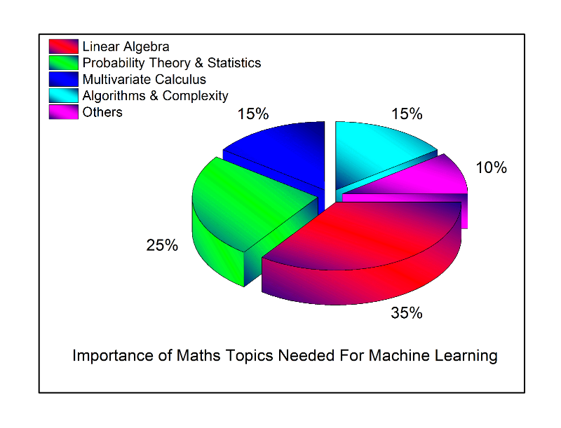

[번역] 머신러닝 속 수학
Apr 24, 2017 00:00 · 1932 words · 4 minute read
The Mathematics of Machine Learning을 번역한 글입니다.
지난 몇 달 간, 나는 데이터 과학의 세계로 모험하고 머신러닝 기술을 사용하여 통계적 규칙성을 조사하고 완벽한 데이터 기반 제품을 개발하고 싶어하는 여러 사람들에게 연락을 받아왔다. 그러나, 나는 실제로 유용한 결과를 얻기 위해 필요한 수학적 직관력과 기초가 부족하다는 것을 관찰할 수 있었다. 이는 내가 이 포스트를 작성하게된 주된 이유이다. 최근들어 scikit-learn, Weka, Tensorflow, R-caret 등과 같은 쉽게 사용할 수 있는 머신러닝/딥러닝 패키지들이 급증하고 있다. 머신러닝 이론은 반복적으로 데이터를 학습하고 지능형 애플리케이션을 구축하는 데 사용될 수있는 숨겨진 인사이트를 발견하기 위한 통계학, 확률론, 컴퓨터 과학 및 알고리즘이 교차하는 분야이다. 머신러닝 및 딥러닝의 엄청난 가능성에도 불구하고, 알고리즘의 내부 작동을 잘 파악하고 좋은 결과를 얻으려면 이러한 기술 중 많은 부분을 수학적으로 완전히 이해해야한다.
왜 수학을 두려워 하는가?
머신러닝에서 수학이 중요한 이유는 다양하며 그 중 몇 가지는 다음과 같다:
- 정확도, 트레이닝 시간, 모델 복잡도, 파라미터 수 및 피쳐 (features) 수에 대한 고려를 포함하는 올바른 알고리즘 선택
- 파라미터 설정과 검증 (validation) 전략 선택
- 편향 분산 (bias-variance)의 트레이드오프의 이해를 기반으로한 언더피팅 (underfitting)과 오버피팅 (overfitting)의 식별
- 올바른 신뢰 구간과 불확실성 추정
어느 수준의 수학적 지식이 필요한가?
머신러닝과 같은 학제 간 분야를 이해하려고 할 때 가장 중요한 질문은 필요한 수학의 양과 이러한 기술을 이해하는 데 필요한 수학의 수준이다. 이 질문의 답은 다차원적이며 개개인의 수준과 관심도에 달렸다. 머신러닝의 수학적 공식화 및 이론적 진보에 대한 연구가 진행 중이며 일부 연구원들은 보다 진보된 기술을 연구하고 있다. 나는 머신러닝 과학자 및 엔지니어가 되기 위해 필요한 최소 수준의 수학과 각 개념의 중요성에 대한 나의 생각을 말하려고 한다.

선형대수학 (Linear Algebra): 나의 동료중 한 명인 Skyler Speakman은 최근에 “선형대수학은 21세기의 수학이다”라고 말한적이 있는데 나는 이 말에 전적으로 동의한다. 머신러닝에서 선형대수학은 모든 곳에서 나타난다.
- 주성분 분석 (Principal Component Analysis, PCA)
- 단일값 분해 (Singular Value Decomposition, SVD)
- 행렬의 고유분해 (Eigendecomposition of a matrix)
- LU 분해 (LU Decomposition)
- QR 분해 (QR Decomposition/Factorization)
- 대칭 행렬 (Symmetric Matrices)
- 고유값 & 고유벡터 (Eigenvalues & Eigenvectors)
- 벡터 공간과 노름 (Vector Spaces and Norms)
이상 위의 것들은 머신러닝에서 사용되는 최적화 방법들을 이해하기 위해 필요한 개념들이다.
확률론 및 통계 (Probability Theory and Statistics): 머신러닝과 통계는 서로 다른 분야가 아니다. 실제로, 누군가는 최근에 머신러닝을 “Mac에서 통계하기”라고 정의했다. 머신러닝에 필요한 기초 통계학 및 확률론 개념들은 다음과 같다.
- 조합 (Combinatorics)
- 확률 규칙 및 공리 (Probability Rules & Axioms)
- 베이지안 이론 (Bayes’ Theorem)
- 랜덤 변수 (Random Variables)
- 분산과 기댓값 (Variance and Expectation)
- 조건부 확률 및 결합 확률 분포 (Conditional and Joint Distributions)
- 표준 분포 (Standard Distributions)
- Bernouil
- Binomial
- Multinomial
- Uniform
- Gaussian
- 모멘트 생성 함수 (Moment Generating Functions)
- 최대 우도 추정 (Maximum Likelihood Estimation, MLE)
- 사전 및 사후 확률 (Prior and Posterior)
- 최대 사후 추정 (Maximum a Posteriori Estimation, MAP)
- 샘플링 방식 (Sampling Methods)
다변수 미적분학 (Multivariate Calculus): 필수 주제중 일부는 다음을 포함한다.
- 미분 및 적분 (Differential and Integral Calculus)
- 편미분 (Partial Derivatives)
- 벡터값 함수 (Vector-Values Functions)
- 방향 그라디언트 (Directional Gradient)
- Hessian
- Jacobian
- Laplacian
- Lagrangian 분포 (Lagrangian Distribution)
알고리즘 및 복잡도 최적화 (Algorithms and Complex Optimizations): 이는 머신러닝 알고리즘의 계산 효율성과 확장성을 이해하고 데이터셋의 희소성을 활용하는데 있어 중요하다.
- 데이터 구조에 대한 지식 (이진 트리, 해싱, 힙, 스택 등)
- 동적 계획법 (Dynamic Programming)
- 랜덤 및 선형 시간 이하 알고리즘 (Randomized & Sublinear Algorithm)
- 그래프 (Graphs)
- 그라디언트/확률론적 하강 (Gradient/Stochastic Descents)
- 원 및 쌍대문제 해결 (Primal-Dual methods)
기타: 이는 위에서 설명한 4가지 주요 영역에서 다루지 않은 다른 수학 분야로 구성된다.
- 복소해석학 (Real and Complex Analysis)
- 집합과 수열 (Sets and Sequences)
- 토폴로지 (Topology)
- 거리 공간 (Metric Spaces)
- 일가 함수 및 연속 함수 (Single-Valued and Continuous Functions)
- 극한 (Limits)
- 코시 커널 (Cauchy Kernel)
- 푸리에 변환 (Fourier Transforms)
- 정보 이론 (Information Theory)
- 엔트로피 (Entropy)
- 정보 이득 (Information Gain)
- 함수 공간 (Function Spaces)
- 다양체/매니폴드 (Manifolds)
- 복소해석학 (Real and Complex Analysis)
다음은 머신러닝에 필요한 수학을 공부할 수 있는 온라인 MOOC와 자료들이다:
- 칸아카데미의 선형대수학, 확률과 통계, 다변수 미적분학, 최적화
- 브라운 대학교의 Philip Klein이 쓴 Coding the Matrix: Linear Algebra through Computer Science Applications
- 텍사스 대학교의 Robert van de Gejin이 쓴 Linear Algebra — Foundations to Frontiers
- 데이비드슨 대학교의 Tim Chartier 강의: Applications of Linear Algebra, Part 1과 Part 2
- Joseph Blitzstein의 Havard Stat 110 lectures
- Larry Wasserman의 All of statistics: A Concise Course in Statistical Inference
- Boyd와 Vandenberghe의 강의: Convex optimization from Standford
- 선형대수학 — Foundations to Frontiers on edX
- Udacity의 Introduction to Statistics
마지막으로, 이 포스트의 주된 목적은 여러분에게 머신러닝에서의 수학의 중요성에 대한 선의의 조언과 필수 주제 및 이 주제들에 대한 유용한 자료들을 주기 위함이다. 그러나, 일부 머신러닝 애호가들은 수학에 초보자이며 이 포스트가 마음에 들지 않을 것이다. (진지하게, 이는 내 목적이 아니다) 초보자들은 머신러닝을 시작하는데 있어 많은 수학적 지식이 필요하진 않다. 기본적인 선행 조건은 이 포스트에서 설명한대로 데이터 분석이며 여러분들은 더 많은 기술과 알고리즘을 습득하면서 수학을 배울 수 있다.